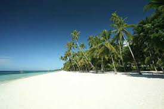
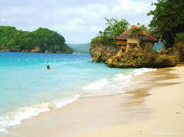
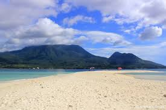
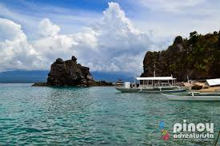
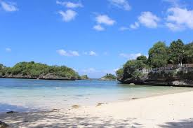

45 Stunning Philippine Beaches to Visit in 2016
Philippines has some of the best beaches in Southeast Asia, if not the world. As a tropical country with over 7,000 islands, Philippines is not only endowed with mountains, caves, waterfalls and a vast array of natural wonders but with the most beautiful beaches on the planet – from deserted white-sand beaches dotted with coconut trees to idyllic islands gifted with rich marine life.
In fact, Philippines once again made it in Condé Nast Traveler's Best Island in World list for 2015 after Palawan topped the list, along with Boracay and Cebu. These world-class islands and beaches only prove that Philippines is, indeed, a veritable beach paradise.
If you've been following me on Instagram and Facebook, you would see how crazy I am to visit and explore every beach in the country. In 2012, I made a list of my top Philippine beaches and since then more beaches have been added in my bucket list and crossed off one by one.
Here are 45 of the best Philippines beaches I was able to personally experience which I recommend for you to see this 2016. It's so hard to rank them by personal favorite so I decided to list them down alphabetically by name.
1. Alona Beach, Panglao, Bohol

One of the popular beaches in the country is the charming Alona Beach in Panglao, Bohol. Aside from the famous Chocolate Hills and Philippine tarsiers which you can visit through Bohol countryside tour, Panglao is also home to some of the country's finest beaches. Click here to find the cheapest deals on accommodation in Panglao.
2. Alubihod Beach, Guimaras

Alubihod Beach in Nueva Valencia, Guimaras is a fantastic beach destination that's very accessible from Iloilo City. The beach is also the jump-off point for island hopping activity in Guimaras if you want to see more of what the island province has to offer.
3. Ambulong Island, San Jose, Occidental Mindoro

Ambulong Island is a pride of San Jose, Occidental Mindoro. Also situated in the island is a premier resort named Grace Island Resort which offers accommodation for travelers seeking for a relaxing trip or a romantic getaway. Their floating cottages look amazing.
4. Apo Island, Occidental Mindoro

Apo Island is the biggest of the three islands located in Apo Reef Natural Park, a popular dive spot in Sablayan, Occidental Mindoro. It features the second largest contiguous coral reef in the world, next to the Great Barrier Reef in Australia. Truly world-class!
5. Ave Maria Islet, Guimaras

Ave Maria Islet is a tiny island that features a beautiful sandbar surrounded by crystal clear water. It's one of the beach spots you can explore in the island hopping tour in Guimaras.